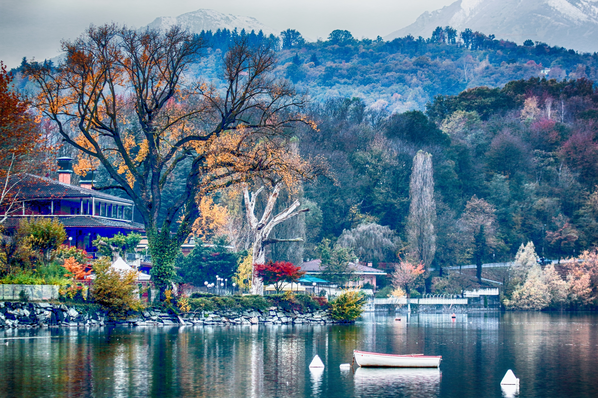
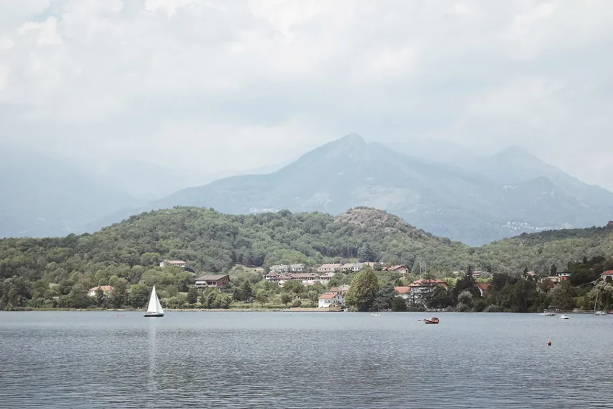

Az Aviglianai tavak (Laghetti di Avigliana) Észak-Olaszországban, a Piemont régióban, a Susa-völgy kapujában találhatók. A két tó – a Nagy-tó és a Kis-tó – a természet és a történelem különleges találkozási pontja.
A környék egy természetvédelmi park része, amely gazdag élővilágával, madárfajaival és nyugodt hangulatával vonzza a kirándulókat. A part mentén gyalogos és kerékpáros ösvények húzódnak, a tavak pedig népszerűek a horgászok és a vízi sportok kedvelői körében is.
